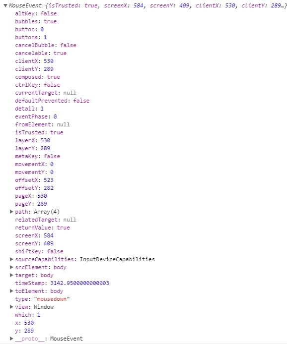
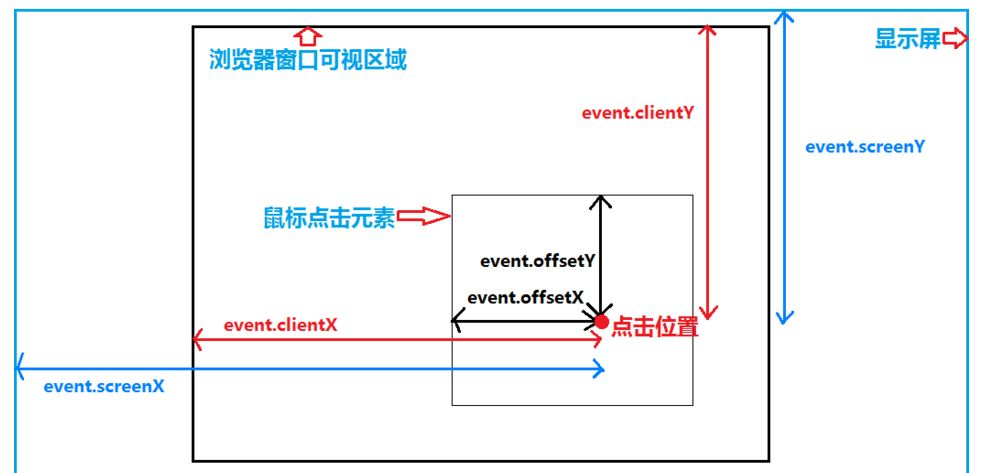

MouseEvent事件
MouseEvent 接口指用户与指针设备（如鼠标）交互时发生的事件。使用此接口的常见事件包括：click、dblclick、mouseup、mousedown。
打印出来的 MouseEvent 如下：

经典的图:

属性
MouseEvent.pageX：实验性，鼠标指针相对于整个文档的 X 坐标；
MouseEvent.pageY：实验性，鼠标指针相对于整个文档的 Y 坐标；
MouseEvent.page* 鼠标事件发生时，鼠标指针相对于整个文档左上角的水平距离和垂直距离。它受页面滚动的影响，页面滚动，它的值也会随之改变。
MouseEvent.clientX:鼠标指针在点击元素（DOM）中的 X 坐标。
MouseEvent.clientY:鼠标指针在点击元素（DOM）中的 Y 坐标。
MouseEvent.client*: 鼠标指针相对于浏览器窗口左上角的水平距离和垂直距离。它不受页面滚动的影响，即使页面滚动，它的值也不会改变
MouseEvent.x 实验性，MouseEvent.clientX的别名。
MouseEvent.y 实验性，MouseEvent.clientY的别名。
MouseEvent.screenX：鼠标指针相对于全局（屏幕）的 X 坐标；
MouseEvent.screenY：鼠标指针相对于全局（屏幕）的 Y 坐标；
MouseEvent.offsetX：实验性，鼠标指针相对于目标节点内边位置的 X 坐标
MouseEvent.offsetY：实验性，鼠标指针相对于目标节点内边位置的 Y 坐标
MouseEvent.movementX:鼠标指针相对于最后mousemove事件位置的 X 坐标。
MouseEvent.movementY：鼠标指针相对于最后mousemove事件位置的 Y 坐标。
MouseEvent.altKey:当鼠标事件触发的时，如果 alt 键被按下，返回 true;
MouseEvent.button:当鼠标事件触发的时，如果鼠标按钮被按下（如果有的话），将会返回一个数值。0 表示左键，1 表示中键，2 表示右键
MouseEvent.buttons:当鼠标事件触发的时，如果多个鼠标按钮被按下（如果有的话），将会返回一个或者多个代表鼠标按钮的数字。
MouseEvent.ctrlKey:当鼠标事件触发时，如果 control 键被按下，则返回 true；
MouseEvent.metaKey:当鼠标事件触发时，如果 meta 键被按下，则返回 true；
MouseEvent.region：返回被点击事件影响的点击区域的 id，如果没有区域被影响则返回 null。
MouseEvent.relatedTarget：鼠标事件的次要目标（如果有的话）
MouseEvent.shiftKey：当鼠标事件触发时，如果 shift 键被按下，则返回 true；
MouseEvent.which 非标准，当鼠标事件触发时，表示被按下的按钮。
MouseEvent.mozInputSource 非标准，生成事件的类型（若干 MOZ_SOURCE_*常量如下列出）。可通过该属性获知鼠标事件是否由真实鼠标设备触发，亦或通过触摸事件触发（这可能影响处理坐标事件时的精确程度）。
MouseEvent.webkitForce 非标准，点击时施加的压力量。
说明
- 当页面没有滚动时，MouseEvent.clientX 和 MouseEvent.pageX 的值相等。但当页面滚动时，MouseEvent.clientX 的值不变，而 MouseEvent.pageX 的值会随着页面滚动而增加或减少。
- 如果需要获得相对于事件目标元素的坐标，应该使用 MouseEvent.offsetX。如果需要获得相对于当前窗口的坐标，应该使用 MouseEvent.clientX。
- preventDefault()：阻止事件的默认行为。例如，在链接上单击鼠标时，会跳转到链接指向的地址。如果在单击事件处理程序中调用了 preventDefault() 方法，则不会跳转到链接地址。
- stopPropagation()：阻止事件进一步传播到其他元素。例如，在一个元素上发生的单击事件可能会传播到该元素的父元素或其他子元素。如果在单击事件处理程序中调用了 stopPropagation() 方法，则事件将不会进一步传播。